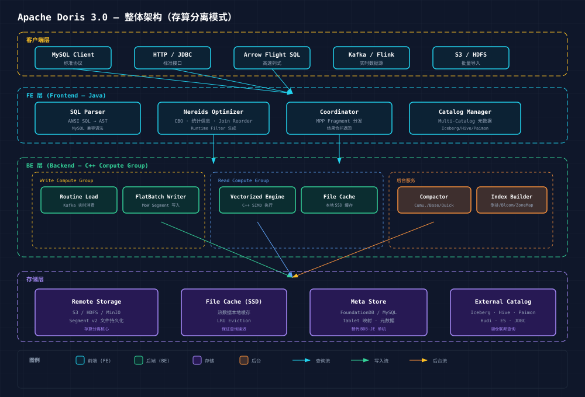

Apache Doris 实时分析数据库深度调研报告
1. 概述与核心概念
Apache Doris 是由百度于 2017 年开源、2022 年进入 Apache 孵化器并毕业的 MPP（大规模并行处理）架构实时分析数据库。它专为 OLAP 场景设计，支持高并发、低延迟的多维分析和实时报表查询。

1.1 历史沿革
| 时期 | 名称 | 关键事件 |
|---|---|---|
| 2013~2017 | Palo (内部) | 百度广告报表业务驱动开发，C++ 实现 |
| 2017~2022 | Palo → Doris | 开源，2018 年捐赠 Apache 进入孵化器，2022 年毕业 |
| 2022~2024 | Doris 1.x~2.x | 功能爆发期：Unique Key MoW、倒排索引、湖仓一体 |
| 2024.07 | Doris 3.0 | 里程碑：存算分离架构正式发布 |
| 2025+ | Doris 3.x~4.x | Nereids 优化器、Falcon 新引擎、Parquet 原生支持 |
1.2 数据模型
Doris 提供三种表模型，针对不同场景：
| 模型 | 应用场景 | 写入语义 | 读写性能 |
|---|---|---|---|
| Duplicate | 明细数据、日志 | Append-only，无聚合 | 最高吞吐 |
| Aggregate | 预聚合指标 | 同 Key 行聚合 (SUM/MAX/MIN/REPLACE) | 写入有聚合开销 |
| Unique (MoW) | 主键更新（宽表、CDC） | 同 Key UPSERT | 写入有去重开销，查询最优 |
| Unique (MoR) | 追加为主，偶尔去重 | 同 Key 追加，查询时多版本合并 | 写入快，查询有合并开销 |
MoW (Merge-on-Write) 是 Doris 2.1+ 默认推荐策略，在写入时完成数据去重合并，读路径无需额外合并开销。
1.3 Tablet & Replica
Doris 数据分布以 Tablet 为单位：Table → Partition → Bucket (Hash) → Tablet → Replica (多副本)
💡 Unique Key 模型详解：
- Merge-on-Write (MoW)：写入时立即查询去重，重复 Key 覆盖旧数据。Doris 2.1+ 默认，适合实时报表和 CDC 同步
- Merge-on-Read (MoR)：追加写入不验证 Key，查询时多版本合并取最新值。写入吞吐高但查询延迟大
2. 存储引擎

2.1 Segment v2 存储格式
Doris 的 Segment 是自研列式存储格式，以 Page 为最小 I/O 单元（默认 1MB），Column Page 内部采用 RLE + Bit-Packing 压缩。
| 维度 | Doris Segment v2 | Apache Parquet |
|---|---|---|
| 设计哲学 | OLAP 写入优化，低延迟 | 数据湖通用，压缩优先 |
| Page 大小 | 1MB (可配置) | ~1MB (Row Group) |
| 索引粒度 | Segment + Page 级 | Row Group + Page 级 |
| 主键支持 | 原生 Prefix Sort Key | 无 |
| 更新支持 | MoW DELETE_BITMAP | 不可变 |
2.2 Compaction 策略
| 类型 | 触发条件 | 作用 |
|---|---|---|
| Cumulative Compaction | Cumulate Point 之前的 Rowset 数量 > 阈值 | 合并大量小 Rowset |
| Base Compaction | Base Rowset 版本过期 | 合并所有 Rowset 为一个 |
| Quick Compaction | MoW 表 Segment 数 > 阈值 | 局部合并 Delete Bitmap 过多的小 Segment |
| Vertical Compaction | 宽表 (大 Column 数) | 按列组合并，减少内存开销 |
2.3 Merge-on-Write 存储实现
MoW 是 Doris 2.1+ 的核心创新，写入流程：
- Tablet Writer 接收数据 Batch，按 Sort Key 排序
- 逐 Key 查询 Tablet 内是否存在 → 不存在则写入新行，存在则 DELETE_BITMAP 标记旧行 + 写入新行
- Segment 文件写满 (默认 256MB) 后封存
- Rowset 提交，数据可见
3. 查询流程

3.1 查询架构
Doris 查询引擎基于自研 C++ 向量化执行引擎，支持标准 SQL 和 MPP 分布式执行。FE (Java) 负责 SQL 解析和优化，BE (C++) 负责数据扫描和向量化执行。
3.2 Nereids CBO 优化器
| 阶段 | 优化器 | 特点 |
|---|---|---|
| v0.x~v1.x | 无优化器 | 手工编写的 SQL Rewrite 规则 |
| v1.x~v2.x | RBO (Rule-Based) | 固定规则重写，无成本模型 |
| v2.1+ | Nereids (CBO, 实验) | 基于成本的优化器，统计信息驱动 |
| v3.0+ | Nereids (CBO, 稳定) | 默认优化器，支持 Join Reorder、CTE 重用 |
3.3 Shuffle 策略
| 策略 | 触发条件 | 说明 |
|---|---|---|
| Broadcast | 右表数据量 < broadcast_row_limit | 全量广播到所有 Scan Node |
| Hash Shuffle | Join Key 或 Agg Key | 按 Key Hash 重分布 |
| Bucket Shuffle | Join Key 与分桶键一致 | 直接按 Bucket 映射，避免 Shuffle |
| Colocate Join | 两张表 Colocation Group 相同 | 零 Shuffle，本地 Join |
💡 Runtime Filter：Join Build 侧生成 Bloom Filter，广播到 Scan 侧提前过滤，可过滤 50%~99% 的无效数据，大幅减少 Shuffle 和 Join 数据量。
4. 架构演进

4.1 各阶段关键特征
| 阶段 | 时期 | 核心能力 |
|---|---|---|
| Palo | 2013~2017 | C++ MPP 验证，Segment v1，Aggregate 模型 |
| Doris 0.x | 2017~2021 | Apache 开源，Segment v2 + 向量化，Colocate Join |
| Doris 1~2.x | 2022~2024 | Unique Key MoW，倒排索引，Multi-Catalog 湖仓 |
| Doris 3.x | 2024~ | 存算分离，读写分离 Compute Group，远程 Compaction |
| Doris 4.x | 2025+ | Falcon 引擎，Parquet 原生，Streaming SQL，AI/ML |
4.2 竞品对比
| 维度 | Doris | ClickHouse | StarRocks | Impala |
|---|---|---|---|---|
| Upsert 能力 | ★★★★★ | ★★ | ★★★★ | ★★ |
| 高并发查询 | ★★★★ | ★★ | ★★★★ | ★★ |
| 大宽表扫描 | ★★★★ | ★★★★★ | ★★★★ | ★★★ |
| 湖仓一体 | ★★★★ | ★★★ | ★★★★ | ★★★★★ |
| 实时导入 | ★★★★★ | ★★★ | ★★★★ | ★★ |
| 存算分离 | ★★★★ | ★★★★★ | ★★★★ | ★★ |
| 运维复杂度 | ★★★(中) | ★★★★(高) | ★★★(中) | ★★★★★(高) |
5. 总结与选型建议
5.1 存算分离 vs Shared-Nothing
| 维度 | Doris 2.x (Shared-Nothing) | Doris 3.x (存算分离) |
|---|---|---|
| 架构模式 | Shared-Nothing MPP | Compute-Storage Separation |
| 存储层 | 本地 SSD/HDD | Object Store (S3/HDFS/MinIO) |
| 弹性扩缩 | 数据重分布，小时级 | 计算节点秒级弹性 |
| 成本 | 高 (计算+存储绑定) | 低 (按需弹性，存储下沉) |
| 写路径 | MoW 本地写入 | MoW + 远程 Compaction |
| 读路径 | 本地 Segment 读取 | File Cache + 远程拉取 |
5.2 选型建议
| 场景 | 推荐方案 | 原因 |
|---|---|---|
| 实时报表 / 多维分析 | Doris 3.x | 极致查询性能，标准 SQL，亚秒级响应 |
| 广告归因 / 用户行为分析 | Doris 3.x Unique MoW | 高效 Upsert，QPS 万级 |
| 日志分析 + 全文搜索 | Doris 3.x + Inverted Index | 倒排索引性能接近 Elasticsearch 2~5x |
| 数据湖查询加速 | Doris 3.x Lakehouse | 原生 Iceberg/Paimon/Hudi 联邦查询 |
| IoT 时序 / 监控指标 | 考虑 InfluxDB 3 或 ClickHouse | Doris 非专为高基数时序优化 |
| ETL 宽表加工 | Doris 2.x / Doris 3.x | 支持增量 Upsert，CDC 实时导入 |
5.3 我们的建议
对于 CHANG_AI_TEAM 的可观测性平台项目，Apache Doris 定位为分析层：
- 定位为分析层：Doris 擅长大规模数据多维聚合分析，适合查询层、报表层
- 不替代时序存储：热指标数据仍用 InfluxDB，Doris 聚焦聚合结果和用户行为分析
- Lakehouse 补充：使用 Doris Iceberg Catalog 对接数据湖，实现分析查询加速
- 关注 3.x 存算分离：降低成本、提升弹性，适配云原生部署策略
- Nereids + Falcon 值得关注：全新优化器 + 执行引擎，预计 4.x 主推